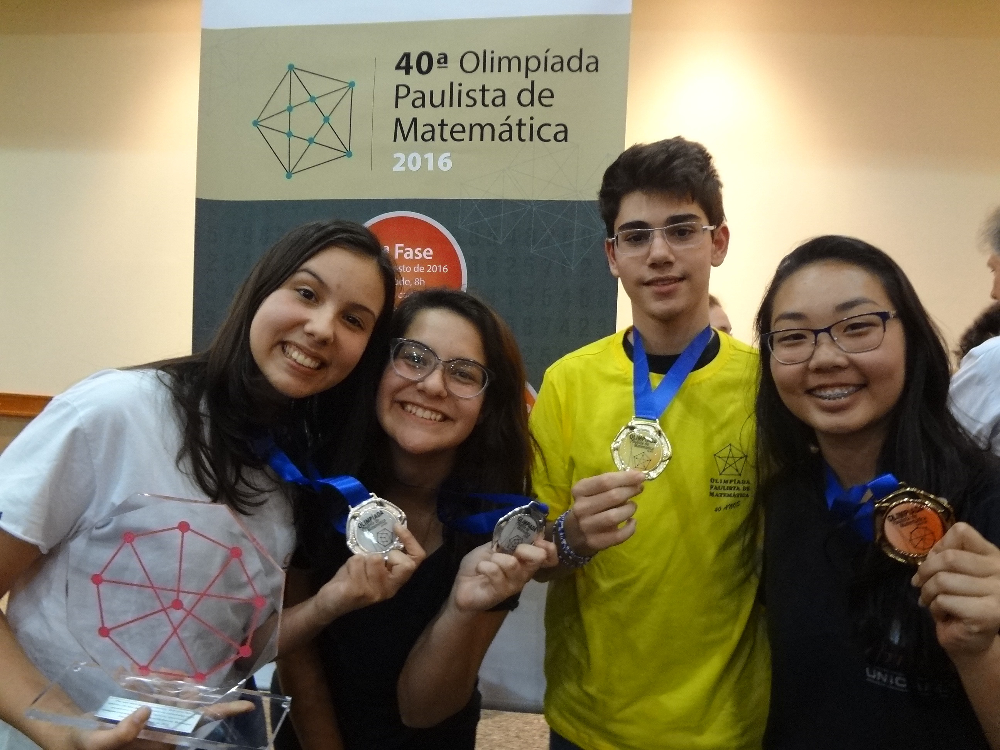
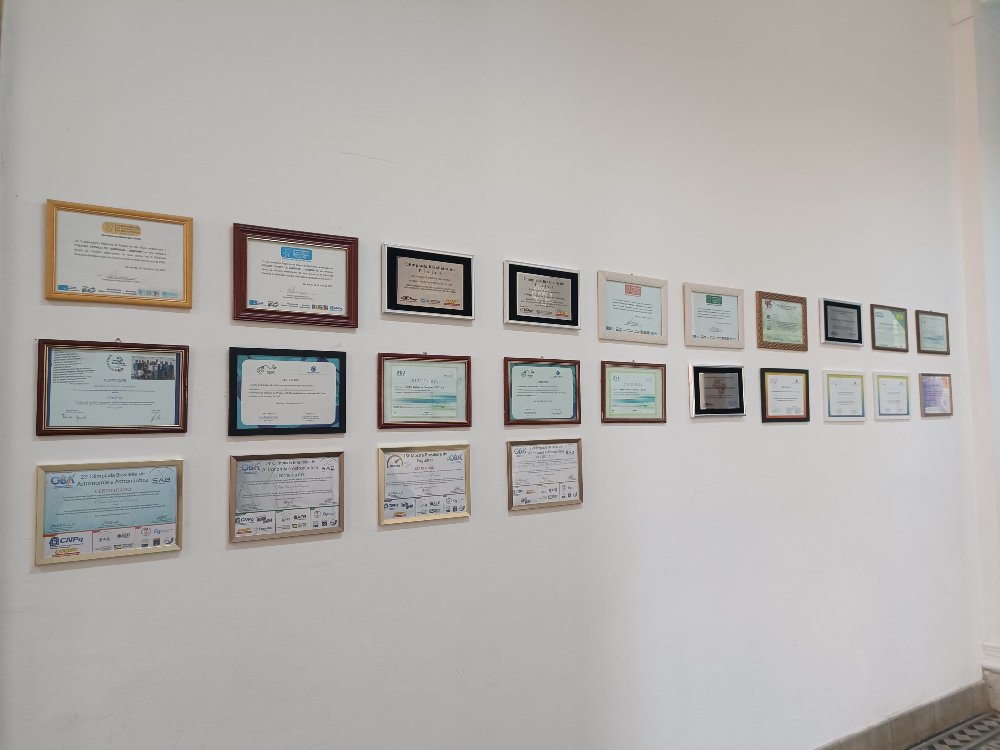

About the College
Created in 1967, the Technical College of Campinas at Unicamp - COTUCA, maintained by the State University of Campinas, is a public and tuition-free educational institution that provides technical-level vocational training and offers integrated high school education for some of its courses. The College offers seventeen options of technical courses and four options for technical specialization, with 60% of the seats available in the evening.
The courses offered by COTUCA cover the following technological areas: environment and health, information and communication, control and industrial processes, food production, industrial production, and management and business. The quality of its courses is evidenced by the high job placement of graduates in the labor market and also in the country's top universities.
The selection process at COTUCA includes the Affirmative Action and Social Inclusion Program - PAAIS. In 2019, 66% of the incoming students came from public schools.
Objectives of the College
The objective of the Technical College of Campinas is to provide the student with high-level professional and general education with a solid foundation.
Its teaching and administrative staff are committed to helping the student develop critical thinking, a growing spirit of social and professional teamwork, aiming for comprehensive personal and professional development as a socially active and successful individual.
Aware of its responsibility as a public and tuition-free school, COTUCA is committed to pursuing excellence in education through teaching methodologies, projects, and training of its teaching and administrative staff to better meet the demands of society.

Images
Here are some images of the school, it's places and students:
Awards
The Technical College of Campinas has many students who are medalists and finalists in various Olympics
Competitions range from math and history to rocket launching and neuroscience.
The medals for each of the competitions can be found at: portfolio
